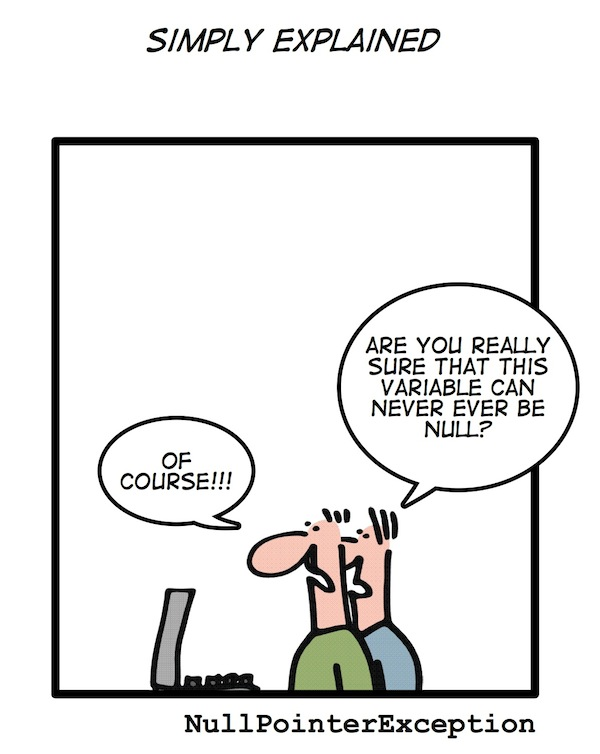
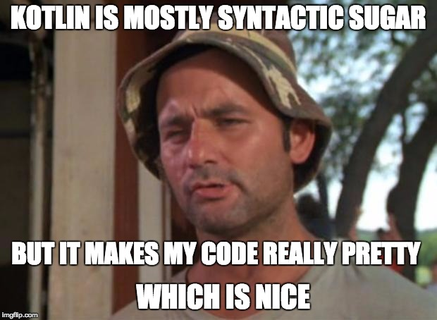

layout: true class: white-text name: cover background-image: url(images/kotlin-tower.jpg) background-size: cover --- layout: true class: divider name: divider background-color: #26546D --- layout: true class: divider name: sub-divider background-color: #70AD47 --- template: cover <div class="footer bottombox" style="background-color: #2C4B60;"> <h1>Introduction to <br>For Java Developers</h1> <h3>Martin Fietz</h3> </div> <div class="footer bottombox"> <h1>Introduction to <br>For Java Developers</h1> <h3>Martin Fietz</h3> </div> --- layout: true --- # First Taste¹ ``` data class Person( val name: String, val age: Int? = null ) fun main(args: Array<String>) { val people = listOf(Person("Alice"), Person("Bob", age = 42)) println("The oldest person is ${people.oldest()}}") } private fun List<Person>.oldest() = this.maxBy { it.age ?: 0 } ``` prints ```diff The oldest person is Person(name=Bob, age=42)} ``` <div class="footnote"> <hr> <span class="footnote">¹ Adapted from <i>Kotlin in Action</i></span> </div> --- count: false # First Taste¹ ``` data class Person( val name: String, val age: Int? = null ) fun main(args: Array<String>) { * val people = listOf(Person("Alice"), Person("Bob", age = 42)) println("The oldest person is ${people.oldest()}}") } private fun List<Person>.oldest() = this.maxBy { it.age ?: 0 } ``` prints ```diff The oldest person is Person(name=Bob, age=42)} ``` <div class="footnote"> <hr> <span class="footnote">¹ Adapted from <i>Kotlin in Action</i></span> </div> --- count: false # First Taste¹ ``` data class Person( val name: String, val age: Int? = null ) fun main(args: Array<String>) { val people = listOf(Person("Alice"), Person("Bob", age = 42)) * println("The oldest person is ${people.oldest()}}") } private fun List<Person>.oldest() = this.maxBy { it.age ?: 0 } ``` prints ```diff The oldest person is Person(name=Bob, age=42)} ``` <div class="footnote"> <hr> <span class="footnote">¹ Adapted from <i>Kotlin in Action</i></span> </div> --- # The Beginning July 2011: Announcement Feb 2016: Release of Kotlin 1.0 May 2017: Google announces First-class support for Android June 2017: Kotlin reaches TIOBE top 50 --- template: divider # Basics --- # Kotlin is ... - based on Java 6 - Open Source: published under the Apache License, Version 2.0 - actively developed on GitHub - loves contributions --- # Key Features - Null Safety - Data Classes - Extension functions - Full Java interoperability - Defaulted parameters --- # Key Features (cont'd) - Immutability - Higher-order functions / lambda expressions - Operator overloading - Type aliases - Coroutines --- # Data Types - Everything is an object, no primitive types - Kotlin compiler will automatically mal basic types back to JVM primitives when possible - values must be boxed when type is nullable or when used in generic ``` val int: Int = 42 val long: Long = 42L val double: Double = 42.17 val float: Float = 42.17F var hexadecimal: Int = 0xFF var binary: Int = 0b010101 val isTrue: Boolean = 42 > 17 val character: Char = 'c' val string: String = "this is a sentence" val rawString: String = """{ "key": "value" }""" val array: Array<Int> = arrayOf(17, 42) ``` --- count: false # Basic Types - Everything is an object, no primitive types - Kotlin compiler will automatically mal basic types back to JVM primitives when possible - values must be boxed when type is nullable or when used in generic ``` val int = 42 val long = 42L val double = 42.17 val float = 42.17F var hexadecimal = 0xFF var binary = 0b010101 val isTrue = 42 > 17 val character = 'c' val string = "this is a sentence" val rawString = """{ "key": "value" }""" val array = arrayOf(17, 42) ``` **Type inference!** --- template: divider # Null Safety --- class: center, middle  *Source: geek-and-poke.com* --- # Nullable Types and Non-Null Types Kotlin distinguishes between nullable references ``` var nullableName: String? = "Kotlin" nullableName.length // compilation error nullableName = null ``` and non-null references: ``` var nullSafeName: String = "Kotlin" nullSafeName.length // guaranteed to not cause an NPE nullSafeName = null // compilation error ``` --- # Safe Calls ``` val length = name?.length ``` Validates to name.length if name is not null, and null otherwise. Safe calls can be chained: ``` val length = company?.department?.team?.name?.length ``` Validates to null if any element of the chain is not null. Equivalent Java code: ```java Integer length = null; if (company != null) { if (company.department != null) { if (company.department.team != null) { length = company.department.team.name.length(); } } } ``` --- # Operators **Elvis Operator** ``` val length = if (name != null) name.length else -1 ``` can be shortened to: ``` val length = name?.length ?: -1; ``` <br> **!! Operator** ("non-null asserted") ``` val length = name!!.length ``` `name!!` validates to non-null value of `name` if `name` is non-null and throw an NPE otherwise --- template: divider # Data Classes --- # Data Classes ``` `data` class Person( val name: String, var age: Int? = null ) ``` The Kotlin compiler automatically generates universal methods from all properties declared in the primary constructor: - `equals()` - `hashCode()` - `toString()` - `componentN` functions (enables use in *destructuring declarations*) - `copy()` --- template: divider # Extension Functions --- # The Java Way ```java public class StringUtils { public static boolean isPalindrom(String s) { return s.length() > 0 && s.equals(new StringBuilder(s).reverse().toString()); } } ``` ```java StringUtils.isPalindrom("anna") ``` --- # Kotlin to the Rescue ``` fun String.isPalindrom() = this.isNotEmpty() && this == this.reversed() ``` The `this` keyword inside an extension function corresponds to the receiver object. In this case, the receiver object is the string the method is called upon. ``` "otto".isPalindrom() ``` <div style="text-align: center"> </div> --- # Other differences to Java - All exceptions are unchecked - constructor is treated the same as a normal function, no new keyword - `==` translate to `equals` and is null safe - `assertThat("Kotlin"), equalTo("Kotlin")` - `if ... else` and `try ... catch` are expressions - their result can be assigned to a value --- # Conclusion <div style="text-align: center">  </div> --- template: divider # Thank you! <!-- CONTEND END -->